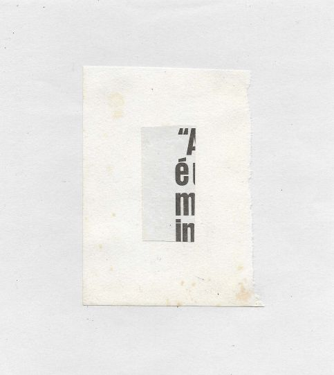

projects
- Tigris e Eufrates
- Morte Botânica
- Uma parede de ouvidos
- Serpente de Pedra
- Corrente Telúrica
- Flange Distal
- Moon Forfeits Motion, Light Drowns
- Bawdy Bang (collaborative website)
- Ko-fi page
- GitHub
social
- Mastodon
- IUOMA
eduardo cardoso
